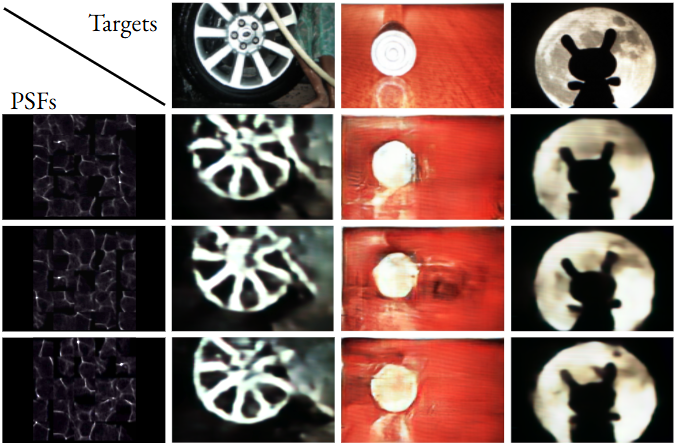
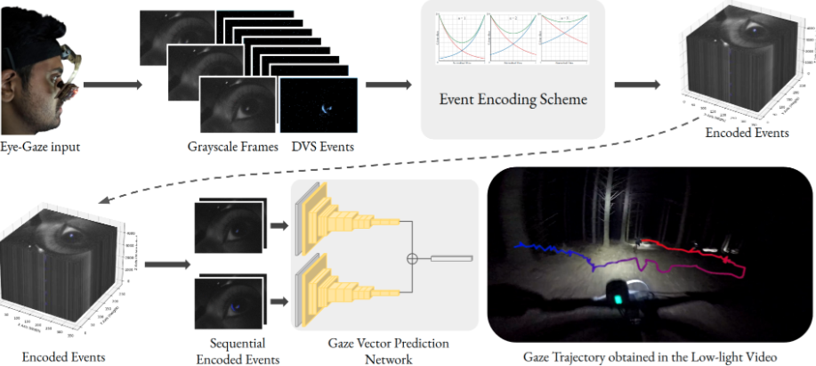
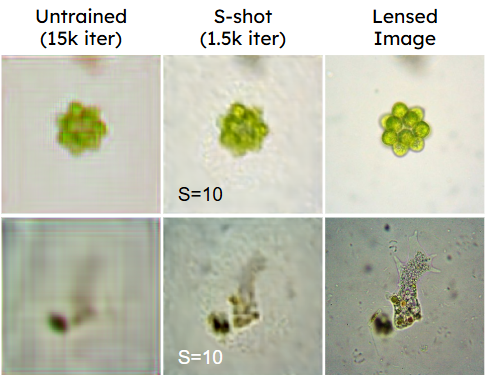
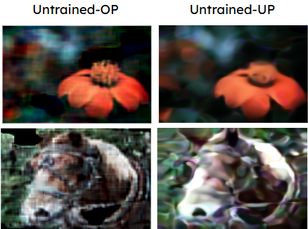
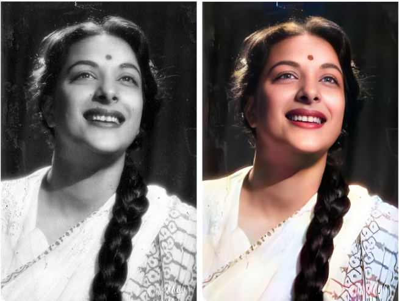
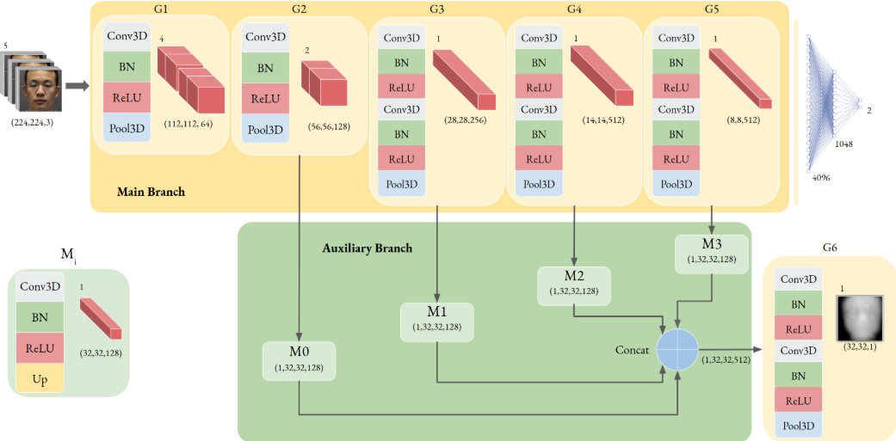
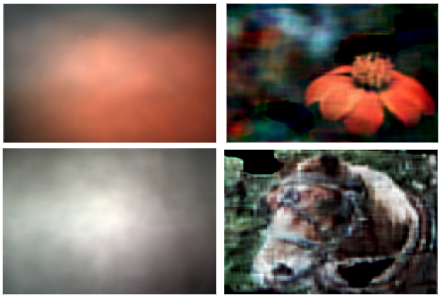
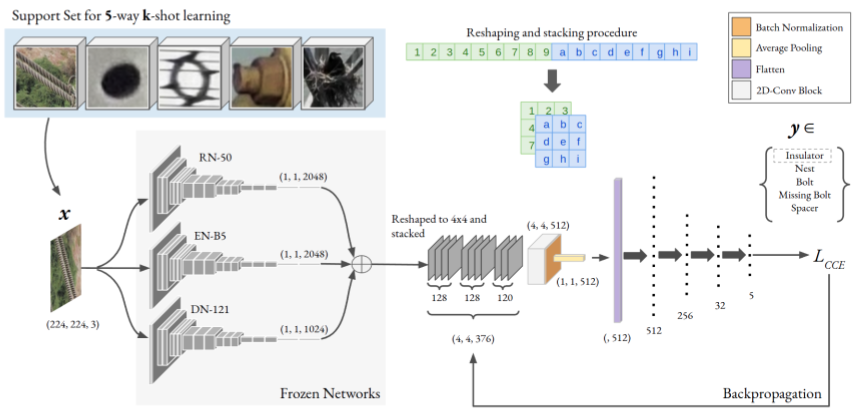
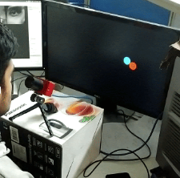

Towards Physics-informed Cyclic Adversarial Multi-PSF Lensless Imaging
IEEE Transactions on Emerging Topics in Computational Intelligence, 2025
Abeer Banerjee, Sanjay Singh

Generalized Gaze-Vector Estimation in Low-light with Encoded Event-driven Neural Network
International Joint Conference on Neural Networks (IJCNN), 2024 (Oral)
Abeer Banerjee, Naval K Mehta, Shyam S Prasad, Himanshu Kumar, Sumeet Saurav, Sanjay Singh

Reconstructing Synthetic Lensless Images in the Low-Data Regime
British Machine Vision Conference (BMVC), 2023
Abeer Banerjee, Himanshu Kumar, Sumeet Saurav, Sanjay Singh

Physics-informed Deep Deblurring: Over-parameterized vs. Under-parameterized
International Conference on Image Processing (ICIP), 2023 (Oral)
Abeer Banerjee, Sumeet Saurav, Sanjay Singh

ParaColorizer: Realistic Image Colorization using Parallel Generative Networks
The Visual Computer Journal, Springer 2023
Himanshu Kumar*, Abeer Banerjee*, Sumeet Saurav, Sanjay Singh (*Equal Contribution)

JS-SpoofNet: A Jointly Supervised Parallel Branched Neural Network for Spoof Detection
Neurocomputing Journal, Elsevier 2023
Shyam S Prasad, Naval K Mehta, Abeer Banerjee, Sumeet Saurav, Sanjay Singh

Lensless Image Reconstruction with an Untrained Neural Network
Image and Vision Computing New Zealand (IVCNZ), 2022
Abeer Banerjee, Himanshu Kumar, Sumeet Saurav, Sanjay Singh

Convolutional Ensembling based Few-Shot Defect Detection Technique
Indian Conference on Vision Graphics and Image Processing (ICVGIP), 2022
Soumyajit Karmakar, Abeer Banerjee, Prashant Gidde, Sumeet Saurav, Sanjay Singh

Gaze Detection using Encoded Retinomorphic Events
International Conference on Intelligent Human Computer Interaction (IHCI), 2022 (Oral)
Abeer Banerjee, Shyam S Prasad, Naval K Mehta, Himanshu Kumar, Sumeet Saurav, and Sanjay Singh